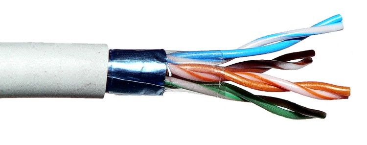

|
Red de área local (LAN)
Conecta computadoras que están relativamente cerca, como en un edificio de oficinas o un hospital
Suelen ser de propiedad y gestión privada
Utilizan conexiones locales, como cables Ethernet y puntos de acceso inalámbricos |
|
Red de área metropolitana (MAN)
Son más grandes que las LAN pero más pequeñas que las WAN
Suelen ser propiedad y gestión de ciudades y entidades de gobierno |
 |
Red de área amplia (WAN)
Conecta computadoras a través de grandes áreas geográficas, como regiones y continentes
Suelen tener modelos de propiedad colectiva o distribuida
Utilizan conexiones de área amplia, como MPLS, VPN, líneas arrendadas y la nube
|
|
Red de área personal (PAN)
Conecta dispositivos personales de una persona, como un teléfono inteligente y una computadora, para compartir contenido. Son las redes más pequeñas y sencillas. |
 |
Red de área de almacenamiento (SAN)
Una red de área de almacenamiento (SAN) es una red de alta velocidad que conecta servidores y dispositivos de almacenamiento. Se utiliza para aplicaciones que requieren un alto rendimiento y baja latencia. |
|
Red generativa antagónica (GAN)
Una red generativa antagónica (GAN) es un modelo de aprendizaje automático que genera datos nuevos y realistas. Se compone de dos redes neuronales que compiten entre sí.
|
|
Red privada virtual (VPN)
Una VPN, o Red Privada Virtual, es una tecnología que crea una conexión segura y encriptada entre tu dispositivo y internet, ocultando tu dirección IP y ubicación, y permitiendo navegar de forma más segura y privada.
|
|
Topologia en bus
En esta topología, todos los dispositivos están conectados a un único cable central, denominado "bus". Los datos viajan a lo largo de este cable y pueden ser recibidos por cualquier dispositivo conectado, aunque solo el destinatario específico los procesa. Es simple y económica, pero su rendimiento disminuye con el aumento de dispositivos, ya que todos comparten el mismo canal de comunicación. |
 |
Topologia en estrella
En la topología en estrella, todos los dispositivos se conectan a un nodo central, que suele ser un switch o un hub. La comunicación entre dispositivos pasa a través de este nodo. Esta topología es fácil de instalar y gestionar, y ofrece una buena aislación de fallos, ya que si un dispositivo falla, solo se ve afectada esa conexión, pero el resto de la red sigue operando.
|
|
Topologia en anillo
En la topología en anillo, los dispositivos están conectados de forma circular, creando un "anillo". Los datos se envían en una dirección específica a lo largo del anillo hasta llegar a su destino. Si un dispositivo o cable se desconecta, toda la red puede verse afectada, aunque algunas variantes como el anillo doble pueden mejorar la fiabilidad.
|
|
Topologia en malla
En una topología en malla, cada dispositivo está directamente conectado con todos los demás dispositivos de la red. Esto proporciona una gran redundancia y fiabilidad, ya que si un enlace falla, siempre hay rutas alternativas. Sin embargo, es costosa y compleja de instalar debido a la cantidad de conexiones necesarias.
|
|
Topologia en árbol
La topología en árbol es una combinación de la topología en estrella y la topología en bus. Los dispositivos están conectados en una jerarquía de nodos, donde los nodos centrales actúan como concentradores, y de estos se derivan otros nodos que conectan a dispositivos finales. Es útil para redes grandes y escalables, pero la falla en un nodo central puede afectar a varios dispositivos.
|
|
Topologia en malla parcial
Es una variación de la topología en malla, donde no todos los dispositivos están directamente conectados entre sí, pero existen múltiples caminos alternativos. Esto reduce los costos de instalación en comparación con la malla completa, mientras mantiene una redundancia razonable.
|
|
Topologia híbrida
La topología híbrida combina dos o más de las topologías anteriores. Se utiliza para adaptarse mejor a redes grandes y complejas, donde se requiere flexibilidad y diferentes soluciones para distintas áreas de la red. Es costosa y difícil de gestionar, pero proporciona alta eficiencia y confiabilidad.
|

 |
Cable de par trenzado
El cable de par trenzado es uno de los medios de transmisión más comunes en redes locales (LAN). Consiste en dos conductores de cobre trenzados entre sí para reducir la interferencia electromagnética. Existen dos tipos principales: el UTP (Unshielded Twisted Pair), sin blindaje, y el STP (Shielded Twisted Pair), que tiene un blindaje para reducir las interferencias. Es económico, fácil de instalar y adecuado para distancias cortas y medianas. |
 |
Cable coaxial
El cable coaxial está formado por un conductor central rodeado por un aislamiento, una malla conductora y una capa exterior de protección. Es más robusto que el par trenzado y ofrece una mayor resistencia a las interferencias. Aunque fue muy popular en redes Ethernet antiguas, hoy en día se utiliza más para la transmisión de televisión por cable o en aplicaciones de alta frecuencia.
|
 |
Fibra Óptica
La fibra óptica transmite datos a través de pulsos de luz. Está formada por hilos de vidrio o plástico que permiten la transmisión de señales a muy alta velocidad y sobre distancias mucho mayores que los cables de cobre. Es inmune a las interferencias electromagnéticas y ofrece gran capacidad de ancho de banda, pero es costosa y más difícil de instalar.
- Fibra Monomodo:La fibra monomodo es un tipo de fibra óptica que transmite un solo rayo de luz por su núcleo. Se utiliza para transportar señales a largas distancias con baja pérdida de señal.
- Fibra Multimodo:La fibra óptica multimodo es un tipo de cable que permite transmitir datos a distancias cortas, como en edificios o campus. Se utiliza en redes de área local (LAN) y centros de datos.
|
|
Radiofrecuencia
Las redes inalámbricas basadas en radiofrecuencia (RF) utilizan ondas de radio para transmitir datos. Estas redes son muy comunes en aplicaciones como Wi-Fi, Bluetooth y redes móviles. Ofrecen gran flexibilidad, pero pueden verse afectadas por interferencias y limitadas en cuanto a la cobertura y el ancho de banda dependiendo de la tecnología utilizada. |
|
Microondas
Las transmisiones por microondas utilizan ondas electromagnéticas de alta frecuencia para enviar información. Son ideales para enlaces de larga distancia y se utilizan en comunicaciones de punto a punto, como las que se encuentran en conexiones de telecomunicaciones entre torres. Sin embargo, requieren una línea de vista directa y pueden ser afectadas por condiciones meteorológicas, como lluvias intensas.
|
 |
Infrarrojos
La transmisión por infrarrojos utiliza luz infrarroja para enviar señales entre dispositivos. Este medio se usa principalmente para conexiones de corto alcance, como en controles remotos y conexiones punto a punto entre dispositivos cercanos. Aunque tiene una buena capacidad de transmisión, su alcance es limitado y requiere una línea de visión directa.
|
|
Satélites
Las comunicaciones satelitales utilizan estaciones de radiofrecuencia y satélites en órbita para transmitir señales de datos. Son ideales para áreas geográficas amplias o de difícil acceso, donde no se pueden establecer conexiones físicas. Las transmisiones satelitales pueden ser afectadas por la latencia y condiciones atmosféricas, pero ofrecen cobertura global.
|
|
Ondas milimétricas
Las ondas milimétricas son ondas electromagnéticas de muy alta frecuencia que se utilizan en tecnologías como 5G para ofrecer grandes capacidades de ancho de banda. Se emplean en enlaces de alta velocidad y en redes móviles avanzadas, pero su alcance es limitado y pueden ser bloqueadas por obstáculos como paredes y edificios.
|
|
Bluetooth
La tecnología Bluetooth conecta las PCs y los dispositivos móviles a los periféricos como los auriculares, teclados, ratones y controles para gaming inalámbricos. Los dispositivos Bluetooth se comunican mediante transmisiones de radio de corto alcance en el rango de frecuencia de 2,4 GHz.
|
|
Wi-Fi
"Wifi" es una tecnología de comunicación inalámbrica que permite a dispositivos electrónicos conectarse a una red, a menudo para acceder a internet, utilizando ondas de radio.
|
|
Hub (Concentrador)
Un hub es un dispositivo simple que conecta varios dispositivos de red en un único segmento de red. Cuando un dispositivo transmite datos, el hub los envía a todos los dispositivos conectados, sin discriminar. Esto puede causar colisiones de datos, lo que afecta el rendimiento de la red. Los hubs operan en la capa física del modelo OSI y, aunque son poco eficientes comparados con dispositivos más modernos, aún se encuentran en algunas redes pequeñas o antiguas.
|
|
Switch (Conmutador)
El switch es un dispositivo más avanzado que el hub. Opera en la capa de enlace de datos y es capaz de identificar las direcciones MAC de los dispositivos conectados. Cuando un dispositivo envía datos, el switch los dirige únicamente al dispositivo de destino, lo que mejora la eficiencia y reduce las colisiones. Los switches son fundamentales en redes de alto rendimiento y son capaces de manejar grandes volúmenes de tráfico de datos sin afectar el rendimiento global de la red.
|
|
Router (Enrutador)
El router es un dispositivo crucial en redes que conectan diferentes subredes o redes completas, como una red local (LAN) con una red de área amplia (WAN), como Internet. Un router opera en la capa de red del modelo OSI y se encarga de enrutar los paquetes de datos entre diferentes redes. Utiliza direcciones IP para determinar la mejor ruta para que los datos lleguen a su destino. Los routers permiten la comunicación entre redes diferentes y realizan funciones de seguridad como el filtrado de tráfico y la asignación de direcciones IP.
|
|
Bridge (Puente)
Un bridge se utiliza para conectar dos segmentos de red dentro de una misma red local (LAN). Este dispositivo opera en la capa de enlace de datos y ayuda a segmentar redes para mejorar el rendimiento y reducir la congestión. Un puente filtra el tráfico y envía solo los datos necesarios a cada segmento de la red, lo que optimiza el uso del ancho de banda. Los bridges también pueden ser utilizados para dividir una red grande en subredes más pequeñas.
|
|
Gateway (Puerta de enlace)
Un gateway es un dispositivo que permite la comunicación entre redes que utilizan diferentes protocolos. Funciona como un "puente" entre redes que no pueden comunicarse directamente debido a diferencias en sus protocolos de comunicación. Los gateways operan generalmente en capas más altas del modelo OSI (como la capa de aplicación) y pueden realizar funciones complejas como la traducción de direcciones de red (NAT), control de tráfico y seguridad.
|
|
Access Point (Punto de acceso)
Un punto de acceso es un dispositivo que conecta dispositivos inalámbricos a una red cableada. Estos dispositivos operan en la capa de enlace de datos y permiten la transmisión de datos a través de Wi-Fi. Los puntos de acceso son fundamentales en redes Wi-Fi, proporcionando acceso a internet o a otras redes locales a dispositivos como smartphones, laptops y tablets.
|
|
Modem
Un modem (modulador-demodulador) es un dispositivo que permite la conexión de una red local (LAN) a Internet a través de una línea telefónica, cable o fibra óptica. Los módems transforman las señales digitales de la computadora en señales analógicas que pueden viajar a través de una línea telefónica y viceversa. Aunque muchos modem modernos integran funciones de router, su función principal es la conversión de señales para la transmisión de datos.
|
|
Física
Capa 1 - Física: Transmite bits a través de un medio físico, como cables o señales de radio (ej. cables, conectores, señales eléctricas).
|
|
Enlace de datos
Capa 2 - Enlace de datos: Asegura una transferencia libre de errores entre dos nodos conectados directamente (ej. Ethernet, MAC).
|
|
Red
Capa 3 - Red: Encargada del direccionamiento y enrutamiento de paquetes (ej. IP).
|
|
Transporte
Capa 4 - Transporte: Garantiza la entrega completa de los datos, con control de errores y segmentación (ej. TCP, UDP).
|
|
Sesión
Capa 5 - Sesión: Gestiona y controla el diálogo (conexiones) entre dos dispositivos (establece, mantiene y finaliza sesiones).
|
|
Presentación
Capa 6 - Presentación: Traduce, cifra y comprime los datos (por ejemplo, convierte datos entre diferentes formatos como texto plano a HTML).
|
|
Aplicación
Capa 7 - Aplicación: Proporciona servicios de red directamente a las aplicaciones del usuario (como correo electrónico, navegación web, FTP).
|